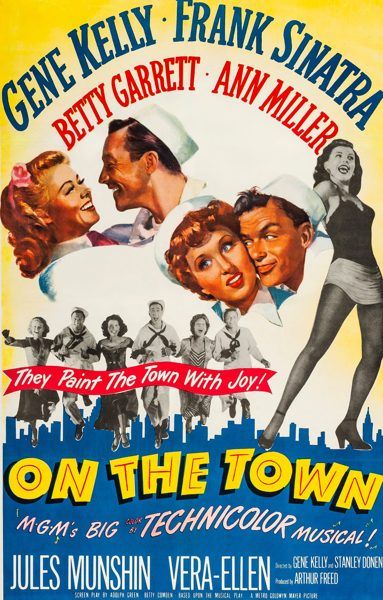

On the Town

Starring: Gene Kelly, Frank Sinatra, Ann Miller
Director: Gene Kelly, Stanley Donen
Writer: Adolph Green, Betty Comden
Producer: Arthur Freed, Roger Edens
On the Town is a 1949 American Technicolor musical film with music by Leonard Bernstein and Roger Edens and book and lyrics by Betty Comden and Adolph Green.
Trivia
- Won the Academy Award for Best Original Musical Score.
- Based on On the Town (1945 musical with music by Leonard Bernstein and book and lyrics by Betty Comden and Adolph Green).
- The film had a budget of $1.5 million, one of MGM's lowest for a Technicolor musical, with a planned filming schedule of just 46 days.
- The musical numbers staged on-location in New York were the first time a major studio had accomplished this.
- The location shots in New York took nine days.
Filming Locations
- New York City
- Shooting in New York City was Kelly and Donen's idea, which studio head Louis B. Mayer refused to allow, pointing out the studio's excellent New York sets in its backlot.
Previous Showings
4 Runs • 2 Festivals
All runs on record (4):
- June 10 - 17, 1994w/ That's Entertainment III
- July 15 - 19, 2000Summer 2000w/ Royal Wedding
- September 7 - 13, 2002w/ An American in Paris
- November 2 - 4, 2018Gene Kelly Film Festival "Gotta Dance!"w/ Take Me Out to the Ball Game